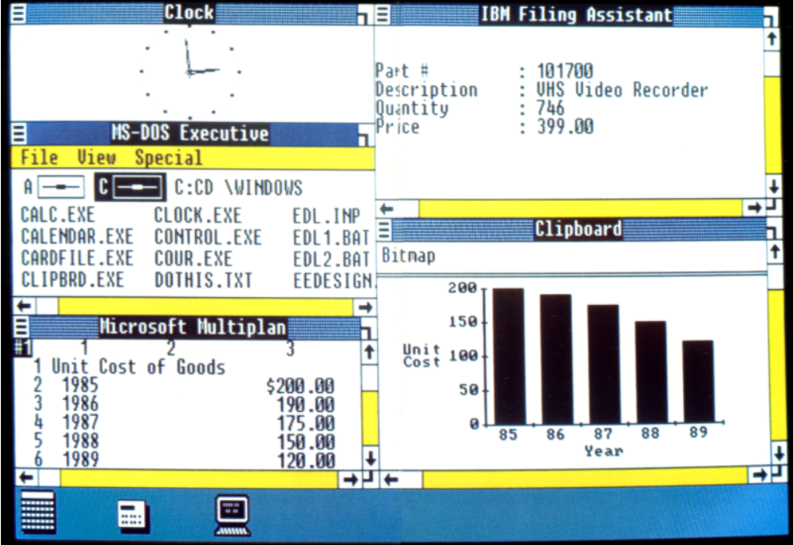
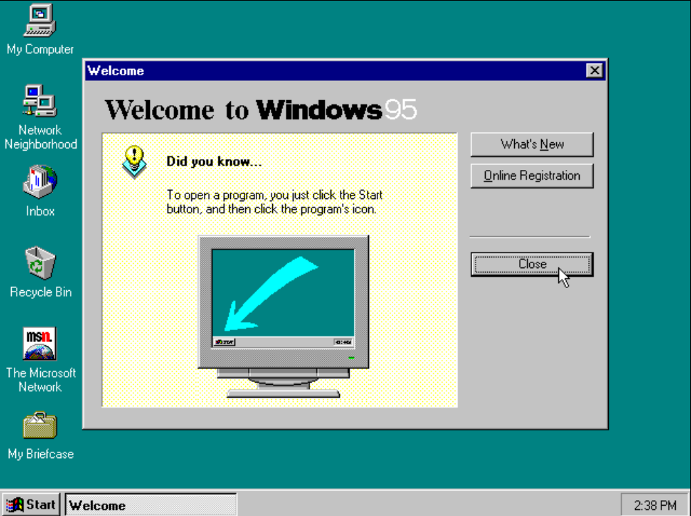
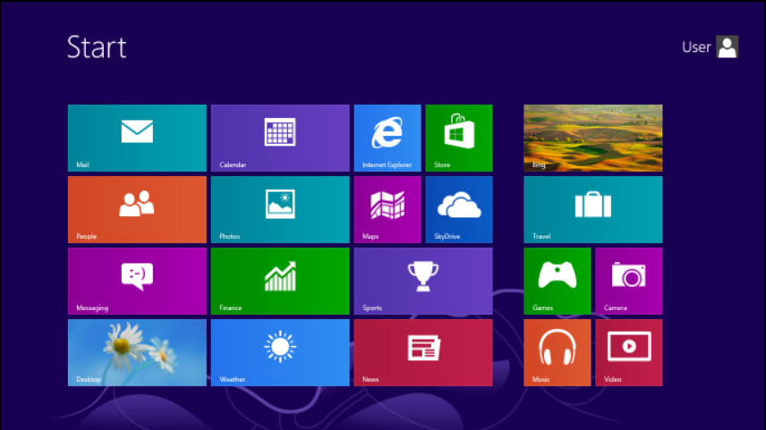
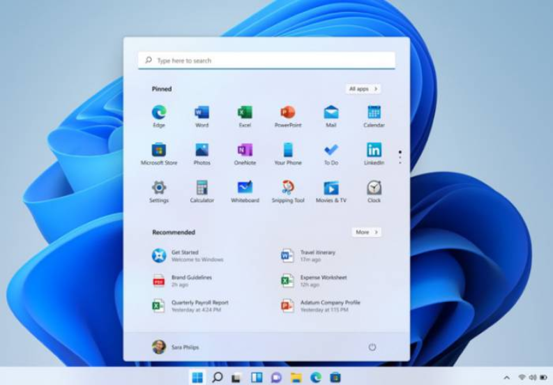

Historie
Grafické uživatelské rozhraní (GUI) bylo poprvé použito v roce 1973 v počítači Xerox Alto
pod názvem WIMP.
Jeho popularizaci mezi běžnými uživateli zajistil v roce 1983 počítač Apple Lisa a v roce
1984 pak masivně
Apple Macintosh. Počítače IBM PC kompatibilní, které byly uvedeny na trh v roce 1981,
používaly systém
MS-DOS, který používal textové, grafické rozhraní musely řešit programy samostatně
(například textový editor
Text602), což bylo pro programátory pracné a nevýhodné. Úplně první předběžná vydání
Microsoft Windows byly
vydány v letech 1983 až 1985. První Microsoft Windows 1.0 byly uvedeny v roce 1985 jako
nadstavba systému
MS-DOS. Komerčně úspěšné byly Windows 3.0 vydané v roce 1990.
Windows pro DOS
Windows pro DOS je označení pro první grafický systém, který firma Microsoft začala prodávat
v roce 1985,
avšak není to termín, který by sama firma Microsoft pro tuto svoji řadu systémů používala
(používáno bylo
označení Microsoft Windows s číselným označením verze). Nejednalo se o operační systém v
pravém slova
smyslu, ale o nadstavbu nad 16bitový systém MS-DOS (DOS měl pouze textové uživatelské
rozhraní s příkazovým
řádkem, systém nezajišťoval plnou kontrolu nad počítačem). Tyto Windows pro DOS se spouštěly
jako běžný
program až poté, co nastartoval systém DOS. Windows pro DOS používaly DOS pro své I/O
operace (zejména pro
přístup k souborovému systému). Tvorba grafického uživatelského rozhraní byla naopak hlavním
úkolem Windows
pro DOS, čímž bylo programátorům nabídnuto jednotné aplikační rozhraní, jednotný subsystém
pro tisk a
podobně. K tomu byly využívány ovladače zařízení dodávané výrobci hardwaru.
Verze windows
Windows 1.0
První verze Windows 1.0 byla na trh uvedena 20. listopadu 1985. Windows 1.0 poskytovaly
jednoduché grafické
rozhraní, ve kterém bylo možné spouštět většinu jednoduchých programů určených původně pro
DOS. Okna se
nemohla překrývat (s výjimkou chybových dialogů), některé složitější programy se v tomto
prostředí používat
nedaly. Naopak bylo výhodnější používat grafické aplikace určené přímo pro tento systém,
které postupně
vytlačily programy určené pro DOS (například textový editor Text602 byl nahrazen programy
Microsoft Word,
Ami Pro a podobně).

Windows 2.0
Verze Windows 2.0 byla vypuštěna v listopadu 1987 a obsahovala několik vylepšení
uživatelského rozhraní a
správy paměti. Ve Windows 2.0 se mohla okna programů překrývat přes druhé a byly změněny a
rozšířeny
klávesové zkratky. Byla také uvedena nová verze pro procesor Intel 80386, která umožnila
preemptivní
multitasking MS-DOS aplikací díky režimu virtuální 8086, avšak aplikace pro Windows stále
využívaly
multitasking kooperativní. Verze 2.1 byla uvedena v květnu 1988 a byla dostupná ve dvou
provedeních:
Windows/286 2.10 a Windows/386 2.10. Označení verzí korespondovalo se schopností využít
rozšířený režim
procesoru Intel 80286 a chráněný režim procesoru Intel 80386, které poskytovaly snadnější
přístup k většímu
množství paměti nad hranici 1 MiB operační paměti RAM.
Windows 3.0 a 3.1
Prvními systémy, které zaznamenaly komerční úspěch, byly Windows 3.0 (22. 5. 1990) a
Windows 3.1 (18. 3.
1992). Jádro těchto systémů obsahovalo částečnou podporu 32bitových ovladačů, které
přistupovaly k hardwaru
přímo bez využití služeb DOSu a BIOSu. Windows 3.0 a Windows 3.1 měly i lepší design, hlavně
kvůli
dispozicím nových virtuálních paměti a načítatelných virtuálních ovladačů zařízení (VxDs),
které jim
umožnilo sdílení libovolných zařízení mezi okny DOS. Aplikace pro Windows tehdy už mohly
běžet ve chráněném
režimu, který jim dal přístup k několika megabajtům paměti a odstranil povinnost podílet se
na schématu
softwarové virtuální paměti systému. Stále běžely v rámci stejného adresního prostoru, kde
segmentovaná
paměť poskytovala určitý stupeň ochrany a také běžela v multi-taskingu. Bylo možné
doinstalovat rozšíření.
Některé části systému však zůstávaly 16bitové, takže systém mohl být ohrožen nesprávně
fungujícími programy
(na rozdíl od systému OS/2, který plně využíval schopnosti tehdejších 32bitových procesorů
Intel 80386).
Tyto nedostatky nutily uživatele přecházet na novější systém Windows NT (viz níže).
Windows 95
Změna vzhledu grafického rozhraní (výměna správce oken) ve Windows 95 (24. 8. 1995)
přinesla intuitivnější
ovládání a vyšší zájem uživatelů. Ihned po vypuštění na trh se první den prodalo 300 000
kopií. Windows 95
obsahoval i podporu protokolu TCP/IP, což znamenalo umožnění přímého přístupu k Internetu
bez instalace
doplňků od jiných dodavatelů (např. Trumpet Winsock), tlačítko Start, podporu dlouhých názvů
souborů – až
255 znaků, a schopnost automaticky detekovat a nakonfigurovat nově připojený hardware do
počítače (Plug and
Play – užívaný dodnes). Mohl nativně spouštět 32bitové aplikace a obsahoval několik
technologických
vylepšení, která zvýšila stabilitu systému oproti Windows 3.1. Bylo představeno několik OEM
Service Releases
(OSR) (velké balíky aktualizací) pro Windows 95, z nichž každý byl hrubě ekvivalentní k
aktualizaci Service
Pack (SP).

Windows 98 a 98 SE
Dalším vydáním byl Windows 98, uveden 25. 6. 1998. Windows 98 přidal podporu USB,
automatickou aktualizaci
počítače, Internet Explorer 4.01, Panel Snadné spuštění... Microsoft představil i druhou
verzi systému
Windows 98 v květnu 1999, pojmenovanou Windows 98 Second Edition (Druhé Vydání, často
zkracován jako Windows
98 SE), která opravila řadu menších chyb a obsahovala novější verze programů např.: Internet
Explorer 5.0,
Windows Media Player 6.2.
Windows Millennium Edition
14. 9. 2000 byl uveden systém Windows ME (Millennium Edition), který byl posledním systémem
z řady Windows
pro DOS. V této verzi byl přidán Windows Movie Maker. Tato verze ale moc fanoušků neměla.
Windows NT
V roce 1993 byla uvedena do prodeje nová řada Windows NT (anglicky New Technology – „nová
technologie“),
která plně využívala schopnosti procesoru Intel 80386 a jeho chráněný režim, pomocí kterého
neztrácí jádro
systému nikdy kontrolu nad počítačem a v něm provozovanými programy. Zajišťuje preemptivní
multitasking,
takže špatně naprogramovaná aplikace nemůže ohrozit běh celého systému. Systém Windows NT
měl vyšší
hardwarové požadavky a byl zamýšlen pro firemní prostředí (tzv. workstation, tj. pracovní
stanice). Označení
NT bylo později z názvů produktů odstraněno, ale stále se jednalo o stejnou řadu operačního
systému.
V řadě systémů Windows NT byla jako první vydána v roce 1993 verze Windows NT 3.1, dále
vznikly Windows NT
3.5 (1994), Windows NT 3.51 (1995), a Windows NT 4.0 (1996), po kterých došlo k opuštění
označení „NT“,
takže dalšími verzemi byly Windows 2000 (2000), Windows XP (2001), Windows XP x64 (2005),
Windows Vista
(2007), Windows 7 (2009), Windows 8 nebo Windows 10 (2015).
Do stejné řady patří i serverová vydání, jako například Windows 2000 Server, Windows
Server 2003 či R2,
Windows Server 2008 či R2, Windows Server 2012 či R2, Windows Server 2016, Windows Server
2019 nebo Windows
Server 2022.
Windows 8
Ve verzi Windows 8 (start 26. října 2012) byla zachována plocha (Desktop), ale tlačítko
Start zmizelo a
bylo nahrazeno dlaždicovým prostředím Metro. Tato změna nebyla uživateli příliš přívětivě
přijata, proto
bylo v další verzi tlačítko Start opět vráceno.

Windows 8.1
Windows 8.1 je další verzí operačního systému Windows. Byl uvolněn 17. října 2013 na
Windows Store jako
bezplatný upgrade předchozí verze (pro dosavadní uživatele Windows 8) a 18. října všeobecně.
Oproti
výchozímu Windows 8 se vrátilo tlačítko Start (stejné jako u Windows 10). Bylo patrné také
vylepšení grafiky
a více možností využití. Zajímavostí je, že Microsoft vypsal odměnu za to, pokud někdo
nalezne a opraví
chyby v této verzi OS.
Windows 10
Windows 10 byl na trh uveden 29. července 2015. Spojuje v sobě vlastnosti Windows 7 a
Windows 8; nabízí
klasickou nabídku Start (která se při ovládání prstem zvětší na celou obrazovku) i živé
dlaždice. Všechny
aplikace se navíc spouštějí v okně (a ne přes celou obrazovku jako ve Windows 8), pro
dotykové displeje jsou
však primárně maximalizované. Úplnou novinkou je tlačítko Task Bar na hlavním panelu, které
zobrazuje
správce virtuálních ploch.
Windows 11
Windows 11 je nejnovější verzí systému Windows byla oficiálně vydána 5. října 2021. Jeho
součástí je
například přepracovaný vzhled s kulatými rohy, vycentrovaným hlavním panelem a přepracovanou
nabídkou Start
či možnost stahování aplikací určených pro systém Android.

Příkazy
Síťové příkazy
ping - testuje spojení se vzdáleným PC, měří dobu odezvy (latenci)
ipconfigping - konfigurace síťových adaptérů (zobrazení TCP/IP hodnot)
ftp - jednoduchý klient pro FTP
tftp - jednoduchý klient pro TFTP
Procesy a služby
shutdown - vypnutí nebo restart počítače
Komentáře